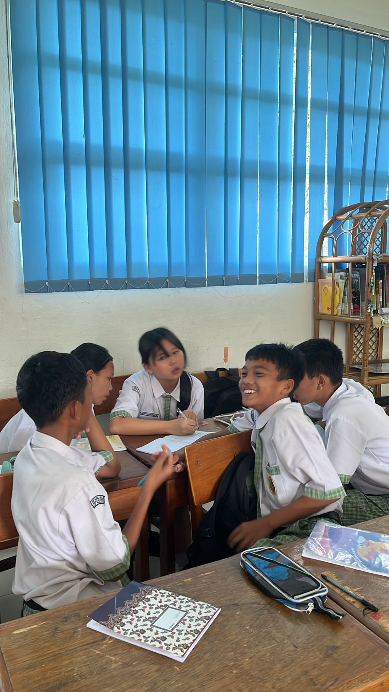

Langkah Awal
Empati
Mencari Akar Masalah
Pada tahap awal ini, kami tidak langsung menentukan solusi. Kami mulai dengan membuka mata terhadap lingkungan sekitar, mengamati kebiasaan teman-teman di sekolah dalam menggunakan produk sehari-hari.
Kami menemukan banyaknya sisa konsumsi yang tidak terkelola dengan baik, mulai dari alat tulis yang terbuang sia-sia hingga penggunaan barang sekali pakai yang berlebihan.
Suara Masyarakat
Untuk memvalidasi temuan kami, kami menyebarkan survei mendalam. Kami ingin mengetahui seberapa sering orang-orang melakukan konsumsi tidak bertanggung jawab tanpa mereka sadari.
Data survei mengarahkan kami pada satu titik fokus utama, yaitu SDGs Nomor 12 (Konsumsi & Produksi yang Bertanggung Jawab).

Data Survei
Dokumentasi 16 Respon Lanskap


Lanjutkan Perjalanan